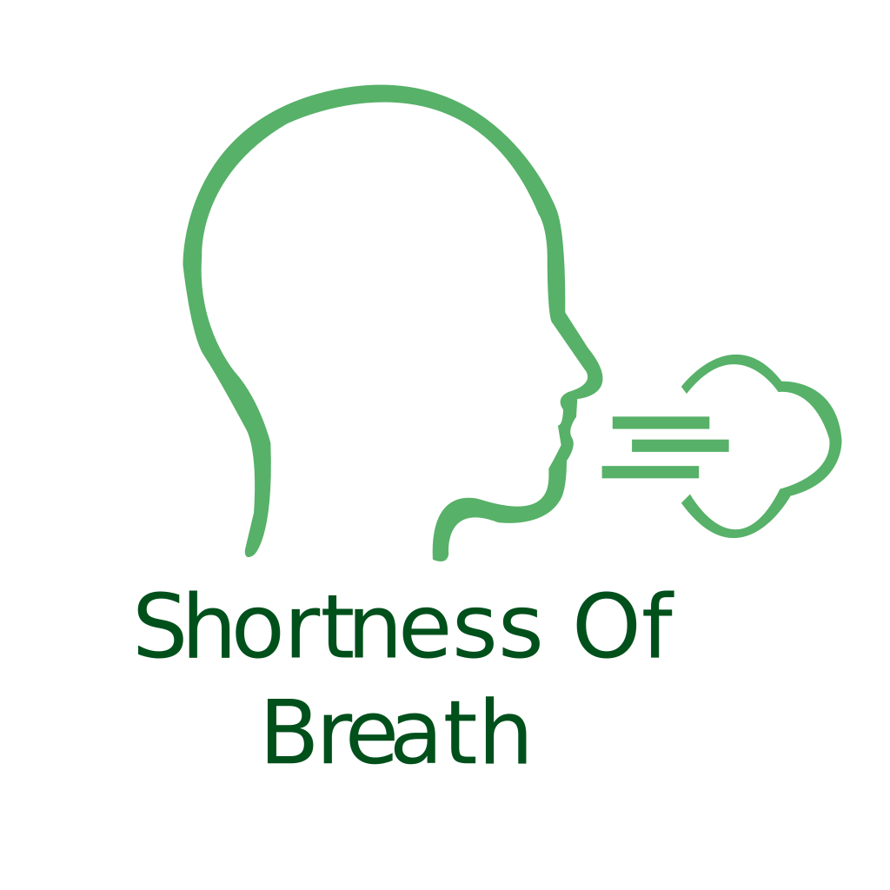
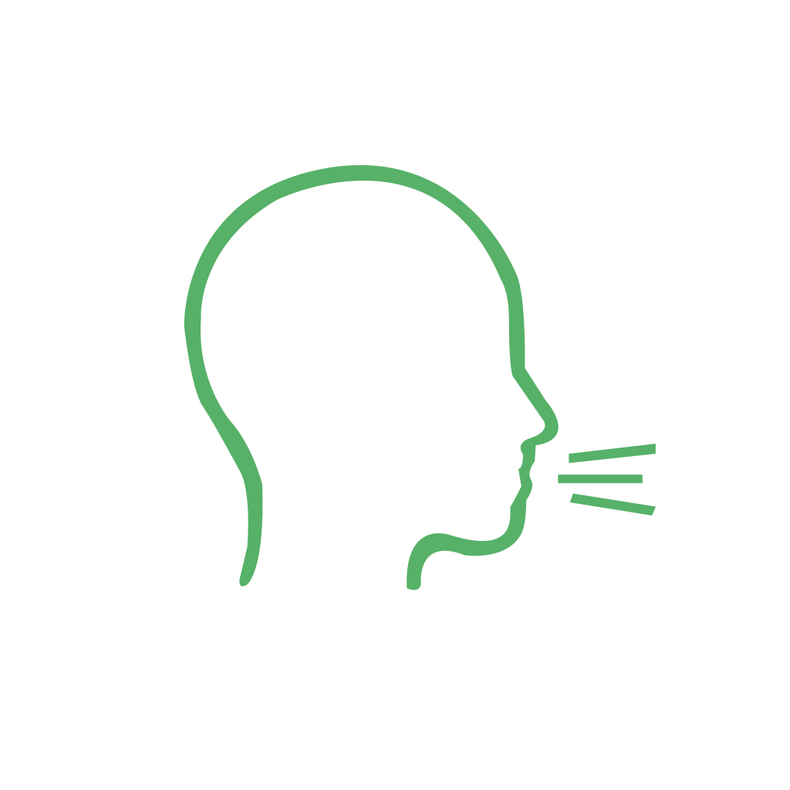
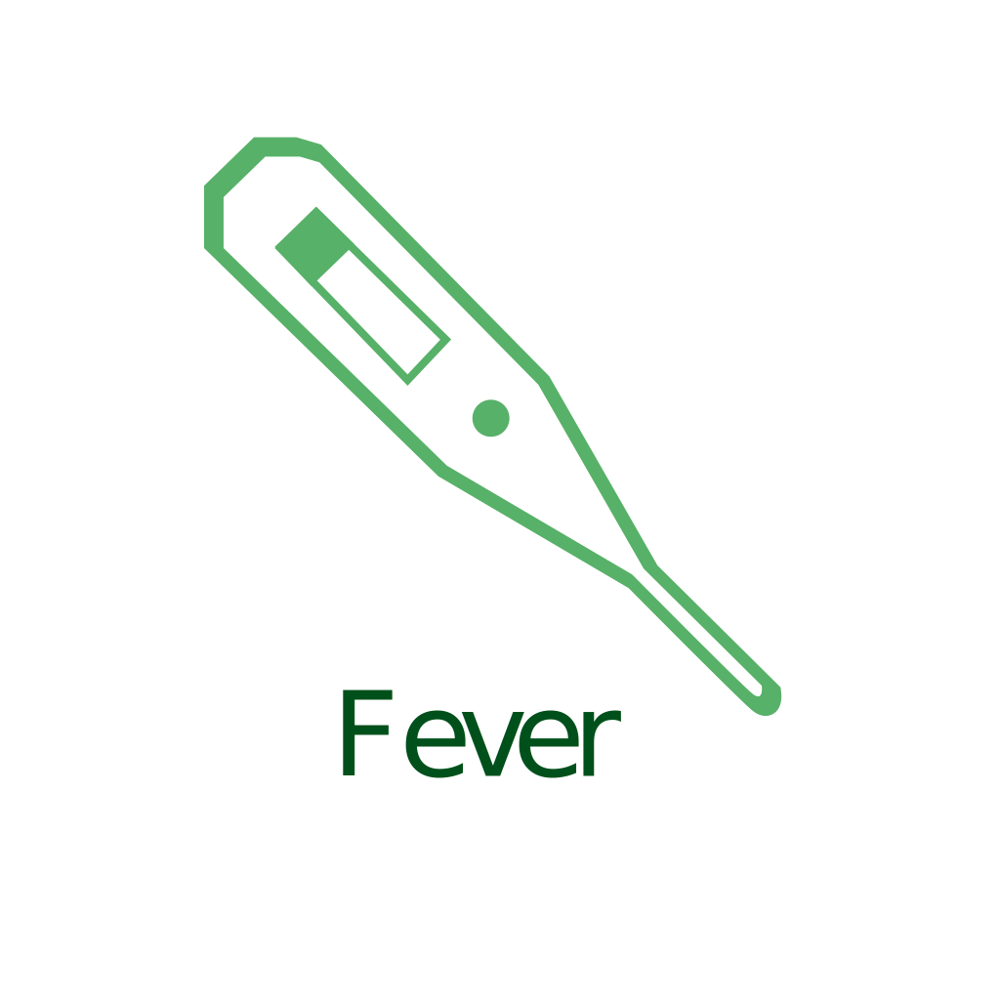

The coronavirus disease (COVID-19) is a highly infectious disease caused by the newly discovered SARS-CoV2 virus.
Common symptoms of the coronavirus are:
-
Shortness of Breath
 Experiencing breathing difficulty describes discomfort when breathing and feeling as if you can’t draw a complete breath. This can develop gradually or come on suddenly. Mild breathing problems, such as fatigue after an aerobics class, don’t fall into this category. -
Cough
 When something irritates your throat or airway, your nervous system sends an alert to your brain. Your brain responds by telling the muscles in your chest and abdomen to contract and expel a burst of air.Corona virus cough gets worse over time. -
Sore Throat
A sore throat is a painful, dry, or scratchy feeling in the throat. It can be a common symptom of a viral infection. -
Fever
 A short-term increase in body temperature can help your body fight off illness.Coronavirus develops a low-grade fever that gradually increases in temperature.